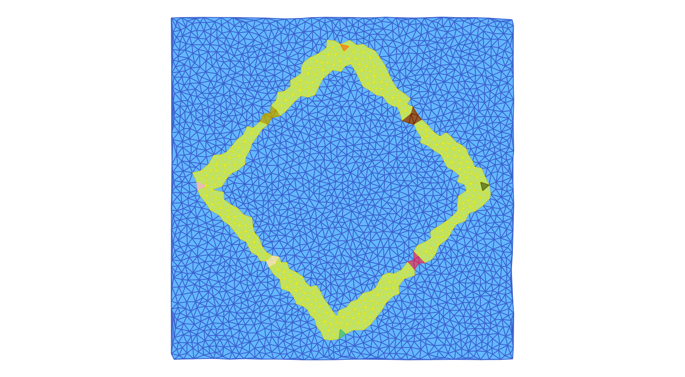

Conley Theory
The main motivation for ConleyDynamics.jl is the development of an accessible tool for studying the global dynamics of multivector fields on Lefschetz complexes. Having already discussed the latter, we now turn our attention to multivector fields and their global dynamics. This involves a detailed discussion of multivector fields, isolated invariant sets, their Conley index, as well as Morse decompositions and connection matrices. We also describe how a variety of isolated invariant sets can be constructed using Morse decomposition intervals, and apply these tools to the analysis of simple planar and three-dimensional ordinary differential equations.
Multivector Fields
Suppose that $X$ is a Lefschetz complex as described in Lefschetz Complexes, see in particular the definition in Basic Lefschetz Terminology. Assume further that the Lefschetz complex is defined over a field $F$, which is either the rational numbers $\mathbb{Q}$ or a finite field of prime order. Then a multivector field on $X$ is defined as follows.
A multivector field $\mathcal{V}$ on a Lefschetz complex $X$ is a partition of $X$ into locally closed sets.
Recall from our detailed discussion in Basic Lefschetz Terminology that a set $V \subset X$ is called locally closed if its mouth $\mathrm{mo}\, V = \mathrm{cl}\, V \setminus V$ is closed, where closedness in turn is defined via the face relation in a Lefschetz complex. This implies that for each multivector $V \in \mathcal{V}$ the relative homology $H_*(\mathrm{cl}\, V, \mathrm{mo}\, V)$ is well-defined, and it allows for the following classification of multivectors:
- A critical multivector is a multivector for which $H_*(\mathrm{cl}\, V, \mathrm{mo}\, V) \neq 0$.
- A regular multivector is a multivector for which $H_*(\mathrm{cl}\, V, \mathrm{mo}\, V) = 0$.
Since a multivector is locally closed, it is a Lefschetz subcomplex of $X$ as well, and we have already seen that its Lefschetz homology satisfies $H_*(V) \cong H_*(\mathrm{cl}\, V, \mathrm{mo}\, V)$. For more details, see Relative Homology.
The above classification of multivectors is motivated by the case of classical Forman vector fields. These are a special case of multivector fields, in that they also form a partition of the underlying Lefschetz complex. This time, however, there are only two types of multivectors:
- A critical cell is a multivector consisting of exactly one cell of the Lefschetz complex. One can easily see that in this case the $k$-th homology group is isomorphic to $F$, as long as the cell has dimension $k$. All other homology groups vanish. Thus, every critical cell is a critical multivector.
- A Forman arrow is a multivector consisting of two cells $\sigma^-$ and $\sigma^+$, where $\sigma^-$ is a facet of $\sigma^+$. In other words, one has to have $\kappa(\sigma^+, \sigma^-) \neq 0$, which also implies that $1 + \dim\sigma^- = \dim\sigma^+$. One can show that all homology groups of a Forman arrow are zero, and therefore it is a regular multivector.
In ConleyDynamics.jl, multivector fields can be created in two different ways. The direct method is to specify all multivectors of length larger than one in an array of type Vector{Vector{Int}} or Vector{Vector{String}}, depending on whether the involved cells are referenced via their indices or labels. Recall that it is easy to convert between these two forms using the command convert_cellsubsets. The subsets specified by the vector entries have to be disjoint. They do not, however, have to exhaust the underlying Lefschetz complex $X$. Any cells that are not part of a specified multivector will be considered as one-element critical cells. This reduces the size of the representation in many situations.
For large Lefschetz complexes, the above method becomes quickly impractical. In such a case it is easier to determine a multivector field indirectly, through a mechanism involving dynamical transitions. This is based on the following result.
Let $X$ be a Lefschetz complex and let $\mathcal{D}$ denote an arbitrary collection of subsets of $X$. Then there exists a uniquely determined minimal multivector field $\mathcal{V}$ which satisfies the following:
- For every $D \in \mathcal{D}$ there exists a $V \in \mathcal{V}$ such that $D \subset V$.
Note that the sets in $\mathcal{D}$ do not have to be disjoint, and their union does not have to exhaust $X$. One can think of the sets in $\mathcal{D}$ as all allowable dynamical transitions.
The above result shows that as long as one has an idea about the transitions that a system has to be allowed to do, one can always find a smallest multivector field which realizes them. Needless to say, if too many transitions are specified, then it is possible that the result leads to the trivial multivector field $\mathcal{V} = \{ X \}$. In most cases, however, the resulting multivector field is more useful. See also the examples later in this section of the manual.
The package ConleyDynamics.jl provides a number of functions for creating and manipulating multivector fields on Lefschetz complexes:
- The function
create_mvf_hullimplements the above theorem on dynamical transitions. It expects two input arguments: A Lefschetz complexlc, as well as a vectormvfbasethat defines the dynamical transitions in $\mathcal{D}$. The latter has to have typeVector{Vector{Int}}orVector{Vector{String}}. - The function
mvf_informationdisplays basic information about a given multivector field. It expects both a Lefschetz complex and a multivector field as arguments, and returns aDict{String,Any}with the information. Thekeysof this dictionary are as follows:"N mv": Number of multivectors"N critical": Number of critcal multivectors"N regular": Number of regular multivectors"Lengths critical": Length distribution of critical multivectors"Lengths regular": Length distribution of regular multivectors
(length,frequency), where each pair indicates that there arefrequencymultivectors of lengthlength. - The function
extract_multivectorsexpects as input arguments a Lefschetz complex and a multivector field, as well as a list of cells specified as aVector{Int}or aVector{String}. It returns a list of all multivectors that contain the specified cells. - The function
create_planar_mvfcreates a multivector field which approximates the dynamics of a given planar vector field. It expects as arguments a two-dimensional Lefschetz complex, a vector of planar coordinates for the vertices of the complex, as well as a function which implements the vector field. It returns a multivector field based on the dynamical transitions induced by the vector field directions on the vertices and edges of the Lefschetz complex. While the complex does not have to be a triangulation, it is expected that the one-dimensional cells are straight line segments between the two boundary vertices. - The utility function
planar_nontransverse_edgesexpects the same arguments as the previous one, and returns a list of nontransverse edges asVector{Int}, which contains the corresponding edge indices. The optional parameternptsdetermines how many points along an edge are evaluated for the transversality check. - The function
create_spatial_mvfcreates a multivector field which approximates the dynamics of a given spatial vector field. While it expects the same arguments as its planar counterpart, the Lefschetz complex has to be of one of the following two types:- The Lefschetz complex is a tetrahedral mesh of a region in three dimensions, i.e., it is a simplicial complex.
- The Lefschetz complex is a three-dimensional cubical complex, i.e., it is the closure of a collection of three-dimensional cubes in space.
All of these functions will be illustrated in more detail in the examples which are presented later in this section. See also the Tutorial for another planar vector field analysis.
Invariance and Conley Index
A multivector field induces dynamics on the underlying Lefschetz complex through the iteration of a multivalued map. This flow map is given by
\[ \Pi_{\mathcal V}(x) = \mathrm{cl}\, x \cup [x]_{\mathcal V} \qquad\text{ for all }\qquad x \in X\]
where $[x]_{\mathcal V}$ denotes the unique multivector in ${\mathcal V}$ which contains $x$. The definition of the flow map shows that the induced dynamics combines two types of behavior:
- From a cell $x$, it is always possible to flow towards the boundary of the cell, i.e., to any one of its faces.
- In addition, it is always possible to move freely within a multivector.
The multivalued map $\Pi_{\mathcal V} : X \multimap X$ naturally leads to a solution concept for multivector fields. A path is a sequence $x_0, x_1, \ldots, x_n \in X$ such that $x_k \in \Pi_{\mathcal{V}}(x_{k-1})$ for all indices $k = 1,\ldots,n$. Paths of bi-infinite length are called solutions. More precisely, a solution of the combinatorial dynamical system induced by the multivector field is then a map $\rho : \mathbb{Z} \to X$ which satisfies $\rho(k+1) \in \Pi_{\mathcal V}(\rho(k))$ for all $k \in \mathbb{Z}$. We say that this solution passes through the cell $x \in X$ if in addition one has $\rho(0) = x$. It is clear from the definition of the flow map that every constant map is a solution, since we have the inclusion $x \in \Pi_{\mathcal V}(x)$. Thus, rather than considering solutions in the above (classical) sense, we focus on a more restrictive notion.
Let $\rho : \mathbb{Z} \to X$ be a solution for the multivector field $\mathcal{V}$. Then $\rho$ is an essential solution, if the following holds:
- If for $k \in \mathbb{Z}$ the cell $\rho(k)$ lies in a regular multivector $V \in \mathcal{V}$, then there exist integers $\ell_1 < k < \ell_2$ for which we have $\rho(\ell_i) \not\in V$ for $i = 1,2$.
In other words, an essential solution has to leave a regular multivector both in forward and in backward time. It can, however, stay in a critical multivector for as long as it wants.
The notion of essential solution has its origin in the distinction between critical and regular multivectors. In Forman's theory, which is based on classical Morse theory, critical cells correspond to stationary solutions or equilibria of the underlying flow. Thus, it has to be possible to stay in a critical multivector for all times, whether in forward or backward time, or even for all times. On the other hand, a Forman arrow indicates prescribed non-negotiable motion, and therefore a regular multivector corresponds to motion which goes from the multivector to its mouth.
The multivector field from the package logo, which is shown in the accompanying image, consists of three critical cells, two Forman arrows, as well as one multivector which consists of four cells. Beyond the constant essenetial solutions in each of the three critical cells, another essential solution is the periodic orbit
\[ \rho_P \;\text{ given by }\; \ldots \to \mathbf{A} \to \mathbf{AB} \to \mathbf{B} \to \mathbf{BCD} \to \mathbf{C} \to \mathbf{AC} \to \mathbf{A} \to \ldots\]
Notice that this is just one of many realizations of this particular periodic motion, since an essential solution can take many different paths through a multivector.

Using the concept of essential solutions we can now introduce the notion of invariance. Informally, we say that a subset of a Lefschetz complex is invariant if through every cell in the set there exists an essential solution which stays in the set. In other words, we have the choice of staying in the set, even though there might be other solutions that do leave. More generally, for every subset $A \subset X$ one can ask whether there are elements $x \in A$ for which there exists an essential solution which passes through $x$ and stays in $A$ for all times. This leads to the definition of the invariant part of $A$ as
\[ \mathrm{Inv}_{\mathcal{V}}(A) = \left\{ x \in A \, : \, \text{there exists an essential solution } \rho : \mathbb{Z} \to A \text{ through } x \right\}\]
It is certainly possible that the invariant part of a set is empty. If, however, the invariant part of $A$ is all of $A$, i.e., if we have $\mathrm{Inv}_{\mathcal{V}}(A) = A$, then the set $A$ is called invariant. In the context of our above logo example, the image of the essential solution $\rho_P$ is clearly an invariant set.
Invariant sets are the fundamental building blocks for the global dynamics of a dynamical system. Yet, in general they are difficult to study. Conley realized in [Con78] that if one restricts the attention to a more specialized notion of invariance, then topological methods can be used to formulate a coherent general theory. For this, we need to introduce the notion of isolated invariant set:
A closed set $N \subset X$ isolates an invariant set $S \subset N$, if the following two conditions are satisfied:
- Every path in $N$ with endpoints in $S$ is a path in $S$.
- We have $\Pi_{\mathcal{V}}(S) \subset N$.
An invariant set $S$ is an isolated invariant set, if there exists a closed set $N$ which isolates $S$.
It is clear that the whole Lefschetz complex $X$ isolates its invariant part. Therefore, the set $\mathrm{Inv}_{\mathcal{V}}(X)$ is an isolated invariant set. Moreover, one can readily show that if $N$ is an isolating set for an isolated invariant set $S$, then any closed set $S \subset M \subset N$ also isolates $S$. Thus, the closure $\mathrm{cl}\, S$ is the smallest isolating set for $S$. With these observations in mind, one obtains the following result from [LKMW23]:
An invariant set $S \subset X$ is an isolated invariant set, if and only if the following two conditions hold:
- $S$ is $\mathcal{V}$-compatible, i.e., it is the union of multivectors.
- $S$ is locally closed.
In this case, the isolated invariant set $S$ is isolated by its closure $\mathrm{cl}\, S$.
Returning to our earlier logo example, notice that the cells visited by the periodic essential solution $\rho_P$ do not form an isolated invariant set, but rather just an invariant set. However, if we consider the larger set $S_P$ which consists of all cells except for the cells $\mathbf{ABC}$ and $\mathbf{D}$, then we do obtain an isolated invariant set which contains the periodic orbit $\rho_P$.
With this characterization at hand, identifying isolated invariant sets becomes straightforward. In addition, since isolated invariant sets are locally closed, we can now also define their Conley index:
Let $S \subset X$ be an isolated invariant set the multivalued flow map $\Pi_{\mathcal{V}}$. Then the Conley index of $S$ is the relative (or Lefschetz) homology
\[ CH_*(S) = H_*( \mathrm{cl}\, S, \mathrm{mo}\, S) \cong H_*(S)\]
In addition, the Poincare polynomial of $S$ is defined as
\[ p_{S}(t) = \sum_{k=0}^\infty \beta_k(S) t^k \, , \quad\text{where}\quad \beta_k(S) = \dim CH_k(S) \; .\]
The Poincare polynomial is a concise way to encode the homology information.
Since the Conley index is nothing more than the relative homology of the closure-mouth-pair associated with a locally closed set, one could easily use the homology functions described in Homology for its computation. However, we have included a wrapper function to keep the notation uniform. In addition, ConleyDynamics.jl contains a function which provides basic information about an isolated invariant set. These two functions can be described as follows:
- The function
conley_indexdetermines the Conley index of an isolated invariant set. It expects a Lefschetz complex as its first argument, while the second one has to be a list of cells which specifies the isolated invariant set, and which is either of typeVector{Vector{Int}}orVector{Vector{String}}. An error is raised if the second argument does not specify a locally closed set. - The function
isoinvset_informationexpects a Lefschetz complexlc::LefschetzComplex, a multivector fieldmvf::CellSubsets, as well as an isolated invariant setiis::Cellsas its three arguments. Itreturns aDict{String,Any}with the information. Thekeysof this dictionary are as follows:"Conley index"contains the Conley index of the isolated invariant set."N multivectors"contains the number of multivectors in the isolated invariant set.
Morse Decompositions
We now turn our attention to the global dynamics of a combinatorial dynamical system. This is accomplished through the notion of Morse decomposition, and it requires some auxilliary definitions:
- Suppose we are given a solution $\varphi : \mathbb{Z} \to X$ for the multivector field $\mathcal{V}$. Then the long-term limiting behavior of $\varphi$ can be described using the ultimate backward and forward images
\[ \mathrm{uim}^- \varphi = \bigcap_{t \in \mathbb{Z}^-} \varphi\left( (-\infty,t] \right) \qquad\text{and}\qquad \mathrm{uim}^+ \varphi = \bigcap_{t \in \mathbb{Z}^+} \varphi\left( [t,+\infty) \right) .\]
Notice that since $X$ is finite, there has to exist a $k \in \mathbb{N}$ such that\[ \mathrm{uim}^- \varphi = \varphi\left( (-\infty,-k] \right) \neq \emptyset \qquad\text{and}\qquad \mathrm{uim}^+ \varphi = \varphi\left( [k,+\infty) \right) \neq \emptyset .\]
- The $\mathcal{V}$-hull of a set $A \subset X$ is the intersection of all $\mathcal{V}$-compatible and locally closed sets containing $A$. It is denoted by $\langle A \rangle_{\mathcal{V}}$, and is the smallest candidate for an isolated invariant set which contains $A$.
- The $\alpha$- and $\omega$-limit sets of $\varphi$ are then defined as
\[ \alpha(\varphi) = \left\langle \mathrm{uim}^- \varphi \right\rangle_{\mathcal{V}} \qquad\text{and}\qquad \omega(\varphi) = \left\langle \mathrm{uim}^+ \varphi \right\rangle_{\mathcal{V}}.\]
While in general the $\mathcal{V}$-hull of a set does not have to be invariant, the following result shows that for every essential solution both of its limit sets are in fact isolated invariant sets.
Let $\varphi$ be an essential solution in $X$. Then both limit sets $\alpha(\varphi)$ and $\omega(\varphi)$ are nonempty isolated invariant sets.
We briefly pause to illustrate these concepts in the context of the above logo example. For the periodic essential solution $\rho_P$, both its ultimate backward and forward images are precisely the cells visited by the solution. The $\mathcal{V}$-hull of $\mathrm{im}\, \rho_P$ is the set $S_P$ which consists of all cells except the index 0 and 2 critical cells. It was already mentioned earlier that this indeed defines an isolated invariant set.
The above notions allow us to decompose the global dynamics of a multivector field. Loosely speaking, this is accomplished by separating the dynamics into a recurrent part given by an indexed collection of isolated invariant sets, and the gradient dynamics between them. This can be abstracted through the concept of a Morse decomposition.
Assume that $X$ is an invariant set for the multivector field $\mathcal{V}$ and that $(\mathbb{P},\leq)$ is a finite poset. Then an indexed collection $\mathcal{M} = \left\{ M_p \, : \, p \in \mathbb{P} \right\}$ is called a Morse decomposition of $X$ if the following conditions are satisfied:
- The indexed family $\mathcal{M}$ is a family of mutually disjoint, isolated invariant subsets of $X$.
- For every essential solution $\varphi$ in $X$ either one has $\mathrm{im} \, \varphi \subset M_r$ for an $r \in \mathbb{P}$ or there exist two poset elements $p,q \in \mathbb{P}$ such that $q > p$ and
\[ \alpha(\varphi) \subset M_q \qquad\text{and}\qquad \omega(\varphi) \subset M_p .\]
The elements of $\mathcal{M}$ are called Morse sets. We would like to point out that some of the Morse sets could be empty.
Given a combinatorial multivector field $\mathcal{V}$ on an arbitrary Lefschetz complex $X$, there always exists a finest Morse decomposition $\mathcal{M}$. It can be found by determining those strongly connected components of the digraph associated with the multivalued flow map $\Pi_{\mathcal{V}} : X \multimap X$ which contain essential solutions. The associated Conley-Morse graph is the partial order induced on $\mathcal{M}$ by the existence of connections, and represented as a directed graph labelled with the Conley indices of the isolated invariant sets in $\mathcal{M}$ in terms of their Poincare polynomials.
In order to capture the dynamics between two subsets $A,B \subset X$ one can define the connection set from $A$ to $B$ as the cell collection
\[ \mathcal{C}(A,B) = \left\{ x \in X \, : \, \exists \, \text{ essential solution } \varphi \text{ through } x \text{ with } \alpha(\varphi) \subset A \text{ and } \omega(\varphi) \subset B \right\} .\]
Then $\mathcal{C}(A,B)$ is an isolated invariant set. We would like to point out, however, that the connection set can be, and in fact will be, empty in many cases.
While the Morse sets of a Morse decomposition are the fundamental building blocks for the global dynamics, there usually are many additional isolated invariant sets for the multivector field $\mathcal{V}$. Of particular interest are Morse intervals. To define them, let $I \subset \mathbb{P}$ denote an interval in the index poset. Then
\[ M_I \; = \; \bigcup_{p \in I} M_p \; \cup \; \bigcup_{p,q \in I} \mathcal{C}( M_q, M_p )\]
is always an isolated invariant set. Nevertheless, not every isolated invariant set is of this form. For example, the figure contains the multivector field which was discussed in [BKMW20, Figure 3]. While the underlying simplicial complex and the Forman vector field are depicted in the left panel, the associated Conley-Morse graph is shown on the right. For this combinatorial dynamical system, there exists an isolated invariant set which contains only the four Morse sets within the gray region under the graph. More details can be found in A Planar Forman Vector Field.
Morse decompositions and intervals can be easily computed and manipulated in ConleyDynamics.jl using the following commands:
- The function
morse_setsexpects a Lefschetz complex and a multivector field as arguments, and returns the Morse sets of the finest Morse decomposition as aVector{Vector{Int}}orVector{Vector{String}}, matching the format used for the multivector field. If the optional argumentposet=trueis added, then the function also returns a matrix which encodes the Hasse diagram of the poset $\mathbb{P}$. Note that this is the transitive reduction of the full poset, i.e., it only contains necessary relations. - The function
morse_intervalcomputes the isolated invariant set for a Morse set interval. The three input arguments are the underlying Lefschetz complex, a multivector field, and a collection of Morse sets. The latter should be determined using the functionmorse_sets. The function returns the smallest isolated invariant set which contains the Morse sets and their connections as aVector{Int}. The result can be converted to label form usingconvert_cells. - The function
restrict_dynamicsrestricts a multivector field to a Lefschetz subcomplex. The function expects three arguments: A Lefschetz complexlc, a multivector fieldmvf, and a subcomplex of the Lefschetz complex which is given by the locally closed set represented bylcsub. It returns the associated Lefschetz subcomplexlcreducedand the induced multivector fieldmvfreducedon the subcomplex. The multivectors of the new multivector field are the intersections of the original multivectors and the subcomplex. - Finally, the function
remove_exit_setremoves the exit set for a multivector field on a Lefschetz subcomplex. It is assumed that the Lefschetz complexlcis a topological manifold and thatmvfcontains a multivector field that is created via eithercreate_planar_mvforcreate_spatial_mvf. The function identifies cells on the boundary at which the flows exits the region covered by the Lefschetz complex. If this exit set is closed, one has found an isolated invariant set and the function returns a Lefschetz complexlcrrestricted to it, as well as the restricted multivector fieldmvfr. If the exit set is not closed, a warning is displayed and the function returns the restricted Lefschetz complex and multivector field obtained by removing the closure of the exit set. In the latter case, unexpected results might be obtained.
The first two of these functions rely heavily on the Julia package Graphs.jl.
Connection Matrices
While a Morse decomposition represents the basic structure of the global dynamics of a combinatorial dynamical system, it does not directly provide more detailed information about the dynamics between them – except for the poset order on the Morse sets. But which of the associated connecting sets actually have to be nonempty? The algebra behind this question is captured by the connection matrix. The precise notion of connection matrix was introduced in [Fra89], see also [HMS21], as well as the book [MW25] which treats connection matrices specifically in the setting of multivector fields and provides a precise definition of connection matrix equivalence, even across varying posets.
Since the precise definition of a connection matrix is beyond the scope of this manual, we only state what it is as an object, what its main properties are, and how it can be computed in ConleyDynamics.jl. Assume therefore that we are given a Morse decomposition $\mathcal{M}$ of an isolated invariant set $S$. Then the connection matrix is a linear map
\[ \Delta \; : \; \bigoplus_{q \in \mathbb{P}} CH_*(M_q) \to \bigoplus_{p \in \mathbb{P}} CH_*(M_p) ,\]
i.e., it is a linear map which is defined on the direct sum of all Conley indices of the Morse sets in the Morse decomposition. One usually writes the connection matrix $\Delta$ as a matrix in the form $\Delta = (\Delta(p,q))_{p,q \in \mathbb{P}}$, which is indexed by the poset $\mathbb{P}$, and where the entries $\Delta(p,q) : CH_*(M_q) \to CH_*(M_p)$ are linear maps between homological Conley indices. If $I$ denotes an interval in the poset $\mathbb{P}$, then one further defines the restricted connection matrix
\[ \Delta(I) \; = \; \left( \Delta(p,q) \right)_{p,q \in I} \; : \; \bigoplus_{p \in I} CH_*(M_p) \to \bigoplus_{p \in I} CH_*(M_p) .\]
Any connection matrix $\Delta$ has the following fundamental properties:
- The matrix $\Delta$ is strictly upper triangular, i.e., if $\Delta(p,q) \not= 0$ then $p < q$.
- The matrix $\Delta$ is a boundary operator, i.e., we have $\Delta \circ \Delta = 0$, and $\Delta$ maps $k$-th level homology to $(k-1)$-st level homology for all $k \in \mathbb{Z}$.
- For every interval $I$ in $\mathbb{P}$ we have
\[ H_*\Delta(I) \; = \; \mathrm{ker}\, \Delta(I) / \mathrm{im}\, \Delta(I) \; \cong \; CH_*(M_I) .\]
In other words, the Conley index of a Morse interval can be determined via the homology of the associated connection matrix minor $\Delta(I)$. - If $\{ p, q \}$ is an interval in $\mathbb{P}$ and $\Delta(p,q) \neq 0$, then the connection set $\mathcal{C}(M_q,M_p)$ is not empty.
We would like to point out that these properties do not characterize connection matrices. In practice, a given multivector field can have several different connection matrices. These in some sense encode different types of dynamical behavior that can occur in the system. Nonuniqueness, however, cannot be observed if the underlying system is a gradient combinatorial Forman vector field on a Lefschetz complex. These are multivector fields in which every multivector is either a singleton, and therefore a critical cell, or a two-element Forman arrow. In addition, a gradient combinatorial Forman vector field cannot have any nontrivial periodic solutions, i.e., periodic solutions which are not constant and therefore critical cells. For such combinatorial vector fields, the following result was shown in [MW25].
If $\mathcal{V}$ is a gradient combinatorial Forman vector field and $\mathcal{M}$ its finest Morse decomposition, then the connection matrix is uniquely determined.
In ConleyDynamics.jl connection matrices can be computed over arbitrary finite fields or the rationals, using the persistence-like algorithm introduced in [DLMS24]:
- The function
connection_matrixcomputes a connection matrix for the multivector fieldmvfon the Lefschetz complexlcover the field associated with the Lefschetz complex boundary matrix. The function returns an object of typeConleyMorseCM, which is further described below. If the optional argumentreturnbasis=trueis given, then the function also returns a dictionary which gives the basis for the connection matrix columns in terms of the original cell labels.
The connection matrix is returned in an object with the composite data type ConleyMorseCM. Its docstring is as follows:
ConleyDynamics.ConleyMorseCM — TypeConleyMorseCM{T}Collect the connection matrix information in a struct.
The struct has the following fields:
matrix::SparseMatrix{T}: Connection matrixcolumns::Vector{Int}: Corresponding columns in the boundary matrixposet::Vector{Int}: Poset indices for the connection matrix columnslabels::Vector{String}: Labels for the connection matrix columnsmorse::Vector{Vector{String}}: Vector of Morse sets in original complexconley::Vector{Vector{Int}}: Vector of Conley indices for the Morse setscomplex::LefschetzComplex: The Conley complex as a Lefschetz complex
To illustrate these fields further, we briefly illustrate them for the example associated with the last figure, see again A Planar Forman Vector Field. For reference, the underlying simplicial complex and Forman vector field are shown in the next figure.

The underlying Lefschetz complex, multivector field, and connection matrix can be computed over the field $GF(2)$ as follows:
lc, mvf, coords = example_forman2d()
cm = connection_matrix(lc, mvf)
sparse_show(cm.matrix)[0 0 0 0 1 0 1 0 0]
[0 0 0 0 0 1 0 0 0]
[0 0 0 0 1 1 1 0 0]
[0 0 0 0 0 0 0 0 1]
[0 0 0 0 0 0 0 1 0]
[0 0 0 0 0 0 0 0 0]
[0 0 0 0 0 0 0 1 0]
[0 0 0 0 0 0 0 0 0]
[0 0 0 0 0 0 0 0 0]The field cm.poset indicates which Morse set each column belongs to, while the field cm.labels shows which cell label the column corresponds to. For the example one obtains:
print(cm.poset)[1, 2, 3, 3, 4, 5, 6, 7, 8]print(cm.labels)["D", "E", "F", "GJ", "BF", "EF", "HI", "ADE", "FGJ"]Note that except for the third and fourth column, all columns belong to unique Morse sets whose Conley index is a one-dimensional vector space. The third and fourth column correspond to the periodic orbit, whose Conley index is a two-dimensional vector space. The Conley indices for all eight Morse sets can be seen in the field cm.conley:
cm.conley8-element Vector{Vector{Int64}}:
[1, 0, 0]
[1, 0, 0]
[1, 1, 0]
[0, 1, 0]
[0, 1, 0]
[0, 1, 0]
[0, 0, 1]
[0, 0, 1]The full associated Morse sets are list in cm.morse:
cm.morse8-element Vector{Vector{String}}:
["D"]
["E"]
["F", "G", "I", "J", "FG", "FI", "GJ", "IJ"]
["BF"]
["EF"]
["HI"]
["ADE"]
["FGJ"]As the final struct field, the entry cm.complex returns the connection matrix as a Lefschetz complex in its own right. This is useful for determining the Conley indices of Morse intervals. In our example, the cells of the new Lefschetz complex are given by
cm.complex.labels9-element Vector{String}:
"D"
"E"
"F"
"GJ"
"BF"
"EF"
"HI"
"ADE"
"FGJ"The Morse interval consisting of the two index 2 critical cells $\mathbf{ADE}$ and $\mathbf{FGJ}$ should have as Conley index the sum of the two individual indices, and the following computation demonstrates this:
conley_index(cm.complex, ["ADE", "FGJ"])3-element Vector{Int64}:
0
0
2In contrast, since there is exactly one connecting orbit between $\mathbf{ADE}$ and $\mathbf{BF}$, the Conley index of this interval should be trivial:
conley_index(cm.complex, ["ADE", "BF"])3-element Vector{Int64}:
0
0
0Finally, there are exactly two connecting orbits between the Morse sets $\mathbf{ADE}$ and $\mathbf{EF}$, and therefore the Conley index of this last interval is again the sum of the separate indices:
conley_index(cm.complex, ["ADE", "EF"])3-element Vector{Int64}:
0
1
1Extracting Subsystems
We briefly return to one of the examples in the tutorial. More precisely, we consider the planar ordinary differential equation given by
\[ \begin{array}{rcl} \dot{x}_1 & = & x_1 \left( 1 - x_1^2 - 3 x_2^2 \right) \\[1ex] \dot{x}_2 & = & x_2 \left( 1 - 3 x_1^2 - x_2^2 \right) \end{array}\]
The dynamics of this system is characterized by the existence of a global attractor in the shape of a closed disk. Inside the attractor, there are nine different Morse sets:
- The origin is an equilibrium of index 2, i.e., it is an unstable stationary state with a two-dimensional unstable manifold.
- The four points $(\pm 1/2, \pm 1/2)$ are unstable equilibria of index 1, i.e., with a one-dimensional unstable manifold.
- Finally, the four points $(\pm 1, 0)$ and $(0, \pm 1)$ are asymptotically stable stationary states.
We saw in the tutorial that the Morse decomposition of this system can easily be found using ConleyDynamics.jl, as well as the associated connection matrix. Yet, in certain situations one might only be interested in part of the dynamics on the attractor. Moreover, while the Morse sets describe the recurrent part of the dynamics, they do not provide information on the geometry of the connecting sets between the Morse sets. In the following, we illustrate how this can be analyzed further.
The right-hand side of the above vector field can be implemented using the Julia function
function planarvf(x::Vector{Float64})
#
# Sample planar vector field with nontrivial Morse decomposition
#
x1, x2 = x
y1 = x1 * (1.0 - x1*x1 - 3.0*x2*x2)
y2 = x2 * (1.0 - 3.0*x1*x1 - x2*x2)
return [y1, y2]
endplanarvf (generic function with 1 method)To analyze the resulting global dynamical behavior, we first create a simplicial mesh covering the square $[-6/5, 6/5]^2$ using the commands
lc, coords = create_simplicial_delaunay(300, 300, 5, 50);
coordsN = convert_planar_coordinates(coords,[-1.2,-1.2], [1.2,1.2]);
lc.ncells14395The integer in the output gives the number of cells in the created Lefschetz complex $X$. Note that we are using a Delaunay triangulation over an initial box of size $300 \times 300$, where the target triangle size is about 5. This box is then rescaled to cover the above square. We can then create a multivector field on the simplicial complex lc and find its Morse decomposition using the commands
mvf = create_planar_mvf(lc, coordsN, planarvf);
morsedecomp = morse_sets(lc, mvf);
length(morsedecomp)9As expected, ConleyDynamics.jl finds exactly nine Morse sets. Their Conley indices can be computed and stored in a Vector{Vector{Int}} using the command
conleyindices = [conley_index(lc, mset) for mset in morsedecomp]9-element Vector{Vector{Int64}}:
[1, 0, 0]
[1, 0, 0]
[0, 1, 0]
[1, 0, 0]
[0, 1, 0]
[1, 0, 0]
[0, 1, 0]
[0, 1, 0]
[0, 0, 1]These Conley indices correspond to the dynamical behavior near the equilibrium solutions described above.
Suppose now that rather than finding the connection matrix for the complete Morse decomposition, we would only like to consider a part of it. This can be done as long as we restrict our attention to an interval in the Morse decomposition. Such an interval $\mathcal{I}$ can be created from a selection $\mathcal{S}$ of the Morse sets in the following way:
- In addition to the Morse sets in $\mathcal{S}$, the interval $\mathcal{I}$ contains all Morse sets that lie between two Morse sets in $\mathcal{S}$ with respect to the poset order underlying the Morse decomposition. Recall that this poset order can be computed via
morse_setsby activating the extra return objecthasse, which describes the Hasse diagram of the poset.
With every interval $\mathcal{I}$ of the Morse decomposition one can assign a smallest isolated invariant set $X_{\mathcal{I}} \subset X$ which describes the complete dynamics within and between the Morse sets in $\mathcal{I}$. In fact, in can be characterized as follows:
- The set $X_{\mathcal{I}}$ consists of all cells in the underlying Lefschetz complex $X$ through which one can find a solution which originates in one Morse set of $\mathcal{I}$ and ends in another Morse set of $\mathcal{I}$, where the two involved Morse sets can be the same. In other words, one needs to combine the interval Morse sets with all connecting orbits between them.
The two above steps can be performed in ConleyDynamics.jl using the function morse_interval.
In our example, we consider two intervals. The first interval consists of the five Morse sets corresponding to all unstable equilibrium solutions, while the second one considers the four index 1 and the four stable stationary states. The associated isolated invariant sets for these two intervals can be computed as follows:
subset1 = findall(x -> x[2]+x[3]>0, conleyindices);
subset2 = findall(x -> x[1]+x[2]>0, conleyindices);
lcsub1 = morse_interval(lc, mvf, morsedecomp[subset1]);
lcsub2 = morse_interval(lc, mvf, morsedecomp[subset2]);
[length(subset1), length(subset2), length(lcsub1), length(lcsub2)]4-element Vector{Int64}:
5
8
1201
2256The output shows that we have in fact extracted five and eight Morse sets, respectively. It also shows that the Lefschetz complexes corresponding to these two isolated invariant sets are much smaller than $X$.
So far, we have just determined the collections of cells that correspond to the two isolated invariant sets for these intervals. We can now restrict the combinatorial dynamics to these subsets. Note that since they are both isolated invariant sets, they are locally closed in $X$, and therefore the restrictions provide us with two new Lefschetz complexes lcr1 and lcr2, along with induced multivector fields mvfr1 and mvfr2, respectively. In ConleyDynamics.jl, this is achieved using the commands
lcr1, mvfr1 = restrict_dynamics(lc, mvf, lcsub1);
lcr2, mvfr2 = restrict_dynamics(lc, mvf, lcsub2);
[lcr1.ncells, lcr2.ncells]2-element Vector{Int64}:
1201
2256It is now easy to find the connection matrices for these two intervals. The first connection matrix is given by
cmr1 = connection_matrix(lcr1, mvfr1);
cmr1.conley5-element Vector{Vector{Int64}}:
[0, 1, 0]
[0, 1, 0]
[0, 1, 0]
[0, 1, 0]
[0, 0, 1]full_from_sparse(cmr1.matrix)5×5 Matrix{Int64}:
0 0 0 0 1
0 0 0 0 1
0 0 0 0 1
0 0 0 0 1
0 0 0 0 0It clearly shows that the unstable index 2 Morse set has connecting orbits to every one of the four index 1 equilibria. Similarly, the second connection matrix can be determined as
cmr2 = connection_matrix(lcr2, mvfr2);
cmr2.conley8-element Vector{Vector{Int64}}:
[1, 0, 0]
[1, 0, 0]
[1, 0, 0]
[1, 0, 0]
[0, 1, 0]
[0, 1, 0]
[0, 1, 0]
[0, 1, 0]full_from_sparse(cmr2.matrix)8×8 Matrix{Int64}:
0 0 0 0 0 1 1 0
0 0 0 0 0 0 1 1
0 0 0 0 1 1 0 0
0 0 0 0 1 0 0 1
0 0 0 0 0 0 0 0
0 0 0 0 0 0 0 0
0 0 0 0 0 0 0 0
0 0 0 0 0 0 0 0In this case, every index 1 equilibrium is connected two its two neighboring stable stationary states via heteroclinics that are detected by the connection matrix.
The Lefschetz complexes associated with the two Morse decomposition intervals can also be visualized in ConleyDynamics.jl. For this, recall that the function plot_planar_simplicial_morse can plot an underlying simplicial complex together with any collection of cell subsets. For our purposes, we use the following commands:
show1 = [[lcr1.labels]; cmr1.morse];
show2 = [[lcr2.labels]; cmr2.morse];
fname1 = "/Users/wanner/Desktop/invariantinterval2d1.png"
fname2 = "/Users/wanner/Desktop/invariantinterval2d2.png"
plot_planar_simplicial_morse(lc, coordsN, fname1, show1, vfac=1.1, hfac=2.0)
plot_planar_simplicial_morse(lc, coordsN, fname2, show2, vfac=1.1, hfac=2.0)The variable show1 collects not only the Morse sets that are part of the first connection matrix cmr1, but also the support of the Lefschetz complex lcr1. This support is accessed via [lcr1.labels], and we add it as a first vector of cells in show1. Similarly, we determine the support of the second isolated invariant set, together with the Morse sets of cmr2. The remaining four commands create two images.

The first image shows the five Morse sets surrounding the stationary states at the origin and at $(\pm 1/2, \pm 1/2)$. In addition, it highlights the support of the isolated invariant set associated with this Morse decomposition interval. One can clearly see rough outer approximations for the four heteroclinics which start at the origin and end at the index 1 equilibria. These approximations are necessarily coarse, since we are not working with a very fine triangulation.

Finally, the second image depicts the eight Morse sets enclosing the index 1 and the stable stationary states. It also shows the support of the Lefschetz complex lcr2 which is associated with this Morse decomposition interval. In this case, it covers eight different heteroclinic orbits, which are in fact better approximated than the four in the previous image.
Analysis of a Planar System
Our next example illustrates how ConleyDynamics.jl can be used to analyze the global dynamics of a planar ordinary differential equations. For this, consider the planar system
\[ \begin{array}{rcl} \dot{x}_1 & = & x_2 - x_1 \left( x_1^2 + x_2^2 - 4 \right) \left( x_1^2 + x_2^2 - 1 \right) \\[1ex] \dot{x}_2 & = & -x_1 - x_2 \left( x_1^2 + x_2^2 - 4 \right) \left( x_1^2 + x_2^2 - 1 \right) \end{array}\]
This system has already been considered in [MSTW22]. The right-hand side of this vector field can be implemented using the Julia function
function circlevf(x::Vector{Float64})
#
# Sample vector field with nontrivial Morse decomposition
#
x1, x2 = x
c0 = x1*x1 + x2*x2
c1 = (c0 - 4.0) * (c0 - 1.0)
y1 = x2 - x1 * c1
y2 = -x1 - x2 * c1
return [y1, y2]
endcirclevf (generic function with 1 method)To analyze the global dynamics of this vector field, we first create a cubical complex covering the square $[-3, 3]^2$ using the commands
n = 51
lc, coords = create_cubical_rectangle(n,n,p=2);
coordsN = convert_planar_coordinates(coords,[-3.0,-3.0],[3.0,3.0]);
lc.ncells10609As the last result shows, this gives a Lefschetz complex with 10609 cells. The multivector field can be generated using
mvf = create_planar_mvf(lc, coordsN, circlevf);
length(mvf)2449This multivector field consists of 2437 multivectors. Finally, the connection matrix can be determined using the command
cm = connection_matrix(lc, mvf);
cm.conley3-element Vector{Vector{Int64}}:
[1, 1, 0]
[1, 0, 0]
[0, 1, 1]Therefore, the above planar system has three isolated invariant sets. One has the Conley index of a stable equilibrium, while the other two have that of a stable and an unstable periodic orbit. The columns of the connection matrix correspond to these invariant sets as follows
cm.poset5-element Vector{Int64}:
1
1
2
3
3The connection matrix itself is given by
full_from_sparse(cm.matrix)5×5 Matrix{Int64}:
0 0 0 1 0
0 0 0 0 1
0 0 0 1 0
0 0 0 0 0
0 0 0 0 0This implies that there are connecting orbits from the unstable periodic orbit to both the stable equilibrium, and the stable periodic orbit. To visualize these Morse sets, we employ the commands
fname = "cubicalcircles.pdf"
plot_planar_cubical_morse(lc, fname, cm.morse, pv=true)
In the above example we used the original fixed cubical grid, which is just a scaled version of the grid on the integer lattice. It is also possible to work with a randomized grid, in which the coordinates of the vertices are randomly perturbed. This can be achieved with the following commands:
nR = 75
lcR, coordsR = create_cubical_rectangle(nR,nR,p=2,randomize=0.33);
coordsRN = convert_planar_coordinates(coordsR,[-3.0,-3.0],[3.0,3.0]);
mvfR = create_planar_mvf(lcR, coordsRN, circlevf);
cmR = connection_matrix(lcR, mvfR);
fnameR = "cubicalcirclesR.pdf"
plot_planar_cubical_morse(lcR, coordsRN, fnameR, cmR.morse, pv=true, vfac=1.1, hfac=2.0)
To constrast the above example with the use of a Delaunay triangulation, we reanalyze the vector field in the following way:
lc2, coords2 = create_simplicial_delaunay(400, 400, 10, 30, p=2)
coords2N = convert_planar_coordinates(coords2,[-3.0,-3.0], [3.0,3.0])
mvf2 = create_planar_mvf(lc2, coords2N, circlevf)
cm2 = connection_matrix(lc2, mvf2)
fname2 = "cubicalcircles2.pdf"
plot_planar_simplicial_morse(lc2, coords2N, fname2, cm2.morse, pv=true)In this case, the Morse sets can be visualized as in the figure.

Notice that we can also show the individual multivectors in more detail. For the above example, we can plot all multivectors of the multivector field mvf2 which consist of at least 10 cells using the commands
mv_indices = findall(x -> (length(x)>9), mvf2)
large_mv = mvf2[mv_indices]
fname3 = "cubicalcircles3.pdf"
plot_planar_simplicial_morse(lc2, coords2N, fname3, large_mv, pv=true)
Note that in this example, there are only 20 large multivectors.
Analysis of a Spatial System
It is also possible to analyze simple three-dimensional ordinary differential equations in ConleyDynamics.jl. To provide one such example, consider the system
\[ \begin{array}{rcl} \dot{x}_1 & = & (\lambda-1) x_1 - \frac{3\lambda}{2\pi} \left( (x_1^3 - x_1^2 x_3 + x_2^2 x_3 + 2 x_1 \left( x_2^2 + x_3^2 \right) \right) \\[1ex] \dot{x}_2 & = & (\lambda-4) x_2 - \frac{3\lambda}{2\pi} \; x_2 \left( 2 x_1^2 + x_2^2 + 2 x_1 x_3 + 2 x_3^2 \right) \\[1ex] \dot{x}_3 & = & (\lambda-9) x_3 + \frac{\lambda}{2\pi} \left( x_1 \left( x_1^2 - 3 x_2^2 \right) - 3 x_3 \left( 2 x_1^2 + 2 x_2^2 + x_3^2 \right) \right) \end{array}\]
This system arises in the study of the so-called Allen-Cahn equation, which is the parabolic partial differential equation given by
\[ u_t = \Delta u + \lambda \left( u - u^3 \right) \;\;\;\text{ in }\;\;\; \Omega = (0,\pi) \quad\text{ with }\quad u = 0 \;\;\;\text{ on }\;\;\; \partial\Omega \; .\]
This partial differential equation can be interpreted as an infinite-dimensional system of ordinary differential equations, see for example [SW24, Section 6.1]. For this, one has to expand the unknown function $u(t,\cdot)$ as a generalized Fourier series with respect to the basis functions
\[ \varphi_k(x) = \sqrt{\frac{2}{\pi}} \, \sin(k \pi x) \quad\text{ for }\quad k \in \mathbb{N} \; .\]
If one truncates this series representation after three terms, and projects the right-hand side of the partial differential equation onto the linear space spanned by the first three basis functions, then the three coefficients of the approximating sum satisfy the above three-dimensional ordinary differential equation. Thus, this system provides a model for the dynamics of the partial differential equation, at least for sufficiently small values of the parameter $\lambda$. It can be implemented in Julia using the following commands:
function allencahn3d(x::Vector{Float64})
#
# Allen-Cahn projection
#
lambda = 3.0 * pi
c = lambda / pi
x1, x2, x3 = x
y1 = (lambda-1)*x1 - 1.5*c * (x1*x1*x1-x1*x1*x3+x2*x2*x3+2*x1*(x2*x2+x3*x3))
y2 = (lambda-4)*x2 - 1.5*c * x2 * (2*x1*x1+x2*x2+2*x1*x3+2*x3*x3)
y3 = (lambda-9)*x3 + 0.5*c * (x1*(x1*x1-3*x2*x2)-3*x3*(2*x1*x1+2*x2*x2+x3*x3))
return [y1, y2, y3]
endNotice that for our example we use the parameter value $\lambda = 3\pi$. In this particular case, one can show numerically that the system has seven equilibrium solutions. These are approximately given as follows:
- Two equilibria $\pm(1.45165, \; 0, \; 0.24396)$ of index 0.
- Two equilibria $\pm(0, \; 1.09796, \; 0)$ of index 1.
- Two equilibria $\pm(0, \; 0, \; 0.307238)$ of index 2.
- One equilibrium $(0, \; 0, \; 0)$ of index 3.
In order to find the associated Morse decomposition, one can use the commands
N = 25
bmax = [1.8, 1.5, 1.0]
lc, coordsI = create_cubical_box(N,N,N);
coordsN = convert_spatial_coordinates(coordsI, -bmax, bmax);
mvf = create_spatial_mvf(lc, coordsN, allencahn3d);These commands create a cubical box of size $25 \times 25 \times 25$ which covers the region $[-1.8,1.8] \times [-1.5,1.5] \times [-1.0,1.0]$. In addition, we construct a multivector field mvf which encapsulates the possible dynamics of the system. After these preparations, the Morse decomposition can be computed via
morsedecomp = morse_sets(lc, mvf);
morseinterval = morse_interval(lc, mvf, morsedecomp);
lci, mvfi = restrict_dynamics(lc, mvf, morseinterval);
cmi = connection_matrix(lci, mvfi);While the first command finds the actual Morse decomposition, the second one restricts the Lefschetz complex and the multivector field to the smallest isolated invariant set which contains all Morse sets and connecting orbits between them. The last command finds the connection matrix.
To see whether the above commands did indeed find the correct dynamical behavior, we first inspect the computed Conley indices of the Morse sets:
julia> cmi.conley
7-element Vector{Vector{Int64}}:
[1, 0, 0, 0]
[1, 0, 0, 0]
[0, 1, 0, 0]
[0, 1, 0, 0]
[0, 0, 1, 0]
[0, 0, 1, 0]
[0, 0, 0, 1]Clearly, these are the correct indices based on our numerical information concerning the stationary states of the system. The connection matrix is given by:
julia> full_from_sparse(cmi.matrix)
7×7 Matrix{Int64}:
0 0 1 1 0 0 0
0 0 1 1 0 0 0
0 0 0 0 1 1 0
0 0 0 0 1 1 0
0 0 0 0 0 0 1
0 0 0 0 0 0 1
0 0 0 0 0 0 0Thus, there are a total of ten connecting orbits that are induced through algebraic topology. The index 3 equilibrium at the origin has connections to each of the index 2 solutions, which lie above and below the origin in the direction of the $x_3$-axis. Each of the latter two stationary states has connections to both index 1 equilibria. Finally, each of these is connected to both stable states.

The location of the computed Morse sets is illustrated in the accompanying figure, which uses $x$, $y$, and $z$ instead of the variable names $x_1$, $x_2$, and $x_3$, respectively. Notice that while the stationary states of index 0, 2, and 3 are all well-localized, this cannot be said about the two equilibria of index 1. The computed enclosures for the latter two are elongated cubical sets which are shown along the upper left and lower right of the figure. This overestimation is a result of the use of a strict cubical grid, combined with the small discretization size N = 25. Nevertheless, the above simple code does reproduce the overall global dynamical behavior of the ordinary differential equation correctly.
One can also compute over Morse intervals, rather than the complete Morse decomposition. The final two images show two views of the Morse interval which corresponds to one of the index 1 equilibria, and the two stable stationary states. These computations were performed with the finer resolution N = 51.


We would like to emphasize that there are many techniques in the literature that can be used to identify isolated invariant sets and their Conley indices. Rather than giving a detailed list, we refer to [SW14b] and the references therein. For example, in [SW14b] ideas from computational topology were used to rigorously establish candidate sets in three dimensions as an isolating block. The associated Matlab code can be found at [SW14a].
Forman's Morse Complex
The package ConleyDynamics.jl also provides some support for studying Forman gradient vector fields directly, using the notions introduced in [For98b]. In this paper, Forman used the concept of a combinatorial flow $\Phi$ to study the forward orbits generated by the Forman vector field. The map $\Phi$ is a chain map which is chain homotopic to the identity, and it therefore mimics the concept of a time-1-map associated with a dynamical system. Forman shows that upon iteration this map stabilizes as a map $\Phi^\infty$, which encodes the connecting orbits in the associated combinatorial dynamical system. This stabilized combinatorial flow can then be used to find the connection matrix in this case. For more details, we refer to [MW25, Chapter 8]. The combinatorial flow and its stabilized version can be computed using the following two functions.
forman_comb_flowexpects a Lefschetz complex and a Forman vector field as input arguments. It returns matrix representations of Forman's combinatorial flow $\Phi$, as well as of the associated chain homotopy $\Gamma$ between the flow chain map and the identity.forman_stab_flowalso requires both a Lefschetz complex and a Forman vector field as arguments. It then returns matrix representations of Forman's stabilized combinatorial flow $\Phi^\infty$, and of the associated chain homotopy $\Gamma^\infty$. This time, there is a third return argumentstabilized. This boolean flag indicates whether or not the combinatorial flow stabilized. If it did not, then the returned chain map is the last computed iterate, together with the corresponding chain homotopy. There are two possible reasons for failing stabilization: Either the underlying Forman vector field is not gradient (note that this is not checked!), or the maximal number of iterations has been reached. In the latter case, one just has to pass the optional paramtermaxitwith a larger number of allowed iterations.
For analyzing or applying Forman's combinatorial flow, one needs to work with sparse vector representations of chains. These are elements of the chain groups of the underlying Lefschetz complex, which are then represented as sparse matrices consisting of exactly one column. In this form, they can be multiplied by the matrix of the combinatorial flow, which in turn determines the image of the chain under the flow. In general, these vectors are extremely sparse, and only contain a handfull of nonzero entries. ConleyDynamics.jl therefore provides the following two functions for the creation and analysis of sparse chain vectors:
chain_vectoris a function that simplifies the creation of a sparse vector representation of a chain. The chain can be specified by simply listing the cells in the support of the chain. If no coefficients are specified, then the chain is just the sum of these cells, each with coefficient1. The function has several associated methods: The coefficients of the chain can be omitted or specified, and the cells can be listed in index or label form. More details can be found in the description of each method.chain_supportextracts the support of a chain given as a sparse vector. In its simplest form, the function returns aVector{String}which contains the labels of all the cells which have nonzero coefficients in the chain. If one passes the optional parametercoeff=true, then the function returns two arguments: In addition to the vector of labels as above, it also returns the vector of associated coefficients.
References
See the full bibliography for a complete list of references cited throughout this documentation. This section cites the following references:
- [BKMW20]
- B. Batko, T. Kaczynski, M. Mrozek and T. Wanner. Linking combinatorial and classical dynamics: Conley index and Morse decompositions. Foundations of Computational Mathematics 20, 967–1012 (2020).
- [Con78]
- C. Conley. Isolated Invariant Sets and the Morse Index (American Mathematical Society, Providence, R.I., 1978).
- [DLMS24]
- T. K. Dey, M. Lipiński, M. Mrozek and R. Slechta. Computing connection matrices via persistence-like reductions. SIAM Journal on Applied Dynamical Systems 23, 81–97 (2024).
- [For98b]
- R. Forman. Morse theory for cell complexes. Advances in Mathematics 134, 90–145 (1998).
- [Fra89]
- R. Franzosa. The connection matrix theory for Morse decompositions. Transactions of the American Mathematical Society 311, 561–592 (1989).
- [HMS21]
- S. Harker, K. Mischaikow and K. Spendlove. A computational framework for connection matrix theory. Journal of Applied and Computational Topology 5, 459–529 (2021).
- [LKMW23]
- M. Lipinski, J. Kubica, M. Mrozek and T. Wanner. Conley-Morse-Forman theory for generalized combinatorial multivector fields on finite topological spaces. Journal of Applied and Computational Topology 7, 139–184 (2023).
- [MSTW22]
- M. Mrozek, R. Srzednicki, J. Thorpe and T. Wanner. Combinatorial vs. classical dynamics: Recurrence. Communications in Nonlinear Science and Numerical Simulation 108, Paper No. 106226, 30 pages (2022).
- [MW25]
- M. Mrozek and T. Wanner. Connection Matrices in Combinatorial Topological Dynamics. SpringerBriefs in Mathematics (Springer-Verlag, Cham, 2025).
- [SW24]
- E. Sander and T. Wanner. Theory and Numerics of Partial Differential Equations (SIAM, Philadelphia, 2024). In preparation, 1007 pages.
- [SW14a]
- T. Stephens and T. Wanner. Isolating block validation in Matlab, https://github.com/almost6heads/isoblockval (2014).
- [SW14b]
- T. Stephens and T. Wanner. Rigorous validation of isolating blocks for flows and their Conley indices. SIAM Journal on Applied Dynamical Systems 13, 1847–1878 (2014).